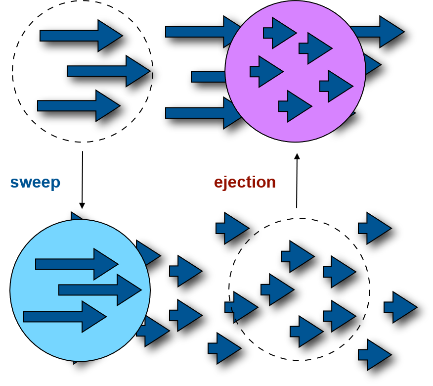
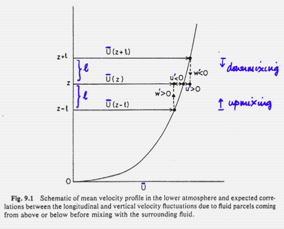

Momentum Exchange
Learning Objectives
- Describe forces that deform surface objects and air parcels.
- Explain how momentum is exchanged in the ABL.
- Describe and quantify momentum transfer in the ABL.
Motivation
Atmospheric motions create forces that deform the atmosphere itself, deform and damage objects, and create waves on water surfaces.
What is Momentum? (iClicker)
Which would best describe momentum?
- A: Momentum = mass \(\times\) velocity
- B: Momentum = mass \(\times\) speed
- C: Momentum = mass \(\times\) direction
- D: Momentum = mass \(\times\) acceleration
Mechanics review -


Drag
In the ABL drag acts as an opposing force exerted by the surface, slowing wind.
- The drag force can be caused by form drag and skin drag.
- For a fluid to move, we require a horizontal force in the direction of the mean flow. Usually this is the pressure gradient force.
Stress
A force tending to deform a body, expressed as force per unit area.
- There are forces acting normal and tangential to a surface.
Tangential stress acting on a grassy field
Stress in the Atmosphere
In the atmosphere, three particular forms of stress are acting on an air parcel:
- Pressure
- Viscous shear stress
- Reynolds stress
Pressure
- Pressure can act on an air parcel at rest.
- At a point, pressure acts isotropically and normal to the surface (normal force per unit area). Because it is not dependent on direction, pressure can be reduced to the scalar \(P\).
- Pressure changes always result in an isotropic compression or expansion of an air parcel.
Total Shear Stress
Viscous shear stress is important whenever there are shearing forces in a moving fluid (laminar or turbulent).
- These shearing forces are opposed to the intermolecular forces. Viscous stress is a function of the velocity gradients and the dynamic viscosity.
Reynolds stress is only found in turbulent flows. It is a result of convective movement of momentum surplus and momentum deficit eddies within the fluid.
Reynolds stress
The flux of momentum is accomplished through random motion. Discrete ‘lumps’ (eddies) of the fluid are displaced by turbulence over a distance and there merge with the flow. Consequently eddies transport their momentum surplus or their momentum deficit (${u}) across a distance.
Simulation: O. Coceal, Univ. of Reading
Stress Tensor
In a three dimensional view, we can define a stress tensor \(\tau\) that deforms a body
- It incorporates 9 stress vectors acting on one point in space.
- The tensor is symmetric, so there are only 6 independent components (3 normal / 3 tangential).
- A stress tensor can be separately written for the viscous shear stress and the Reynolds stress.
Sweeps and Ejections
In the atmospheric boundary layer over flat terrain the transfer can be often simplified 1-dimensional (up/down only)
Ejections Events transporting momentum deficit upward
Sweeps Events transporting momentum surplus downward

Momentum Exchange
Mixing Length
The characteristic height for mixing to occur is the mixing length \(l\) and is likely related to the mean size of eddies.
Assume an eddy at level (\(z+l\)) with mean velocity \(\bar{u}_{(z+l)}\) moves down to \(z\) where mean velocity \(\bar{u}_{(z)}\) is less, by \(u^{\prime}\):
\[ u^{\prime} = \bar{u}_{(z+l)}-\bar{u}_{(z)} \]
so: \[ u^{\prime} = l\small\frac{\delta u}{\delta z} \qquad(1)\]
- i.e. extra velocity = increment in height x rate of change of velocity with height.

Reynolds stress and covariance
Assuming horizontal homogeneity, if an eddy merges:
- It imports /subtracts \(\rho u^{\prime}\) amount of horizontal momentum per unit volume from/to the flow at level \(z\).
If the vertical velocity of the eddy is w’ then the instantaneous Reynolds stress (momentum flux) is
\[ \tau = -\rho u^{\prime} w^{\prime} \]
and in the time average
\[ \tau = -\rho \overline{u^{\prime} w^{\prime}} \]
Friction Velocity
Assuming horizontal homogeneity: In turbulent shear flows, the Reynolds stress (momentum flux) is found to be proportional to the square of the mean flow velocity, which leads to the definition of the friction velocity \(u_*\) (units: m s-1)
\[ u_*^2 = \small\frac{\tau_0}{\rho} \qquad(2)\]
Close to the surface, we can assume \(\tau = \tau_0\) and write: \(\tau = \rho u_*^2\)
And because \(\tau = -\rho \overline{u^{\prime}w^{\prime}}\):
A reasonable estimate of the friction velocity can be made from measurements of the Reynolds stress \(\overline{u^{\prime}w^{\prime}}\) close to the surface, i.e.
\[ u_* = \sqrt{-\overline{u^{\prime}w^{\prime}}} \qquad(3)\]
Vertical flux profile
The force is generated within the lowest layers and transmitted as a vertical flux of horizontal momentum mainly in terms of a Reynolds stress.
Take home points
- There are tangential and normal stresses that deform an air parcel in the atmosphere.
- Sweeps and ejections refer to part of eddies in a turbulent flow that move momentum up and down.
- Momentum transfer can be quantified using the covariance u’w’ and friction velocity u* is a global parameter that describes its square root in the lowest surface layer.